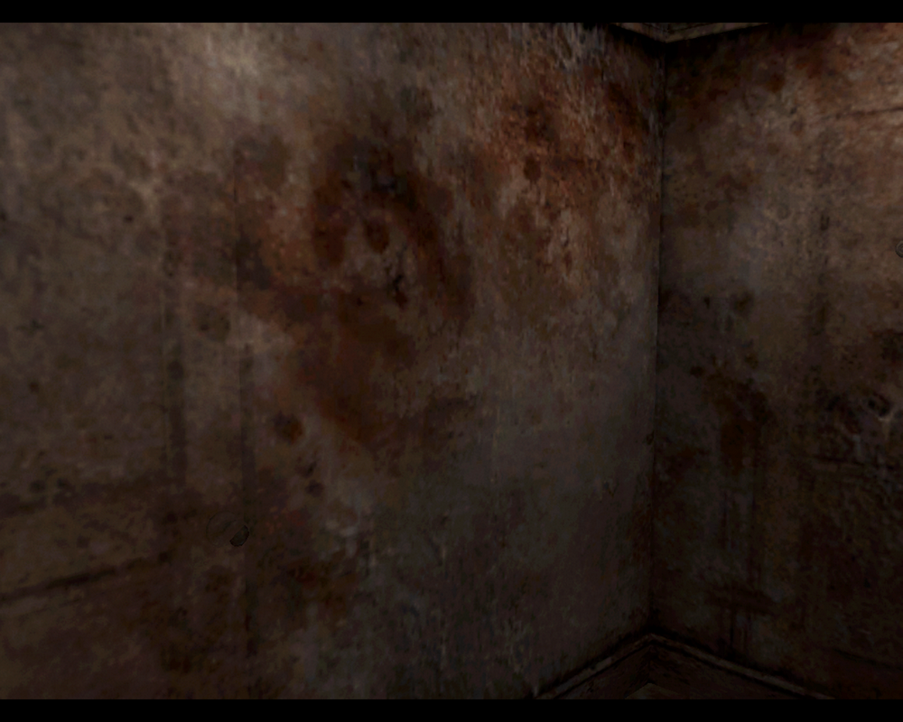
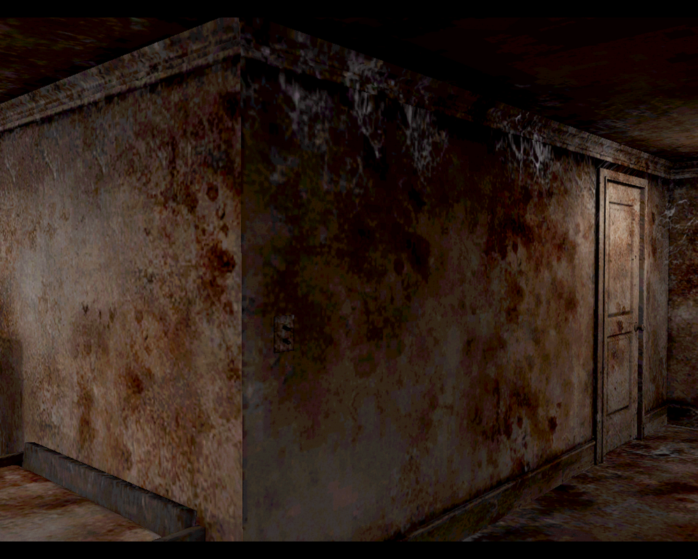
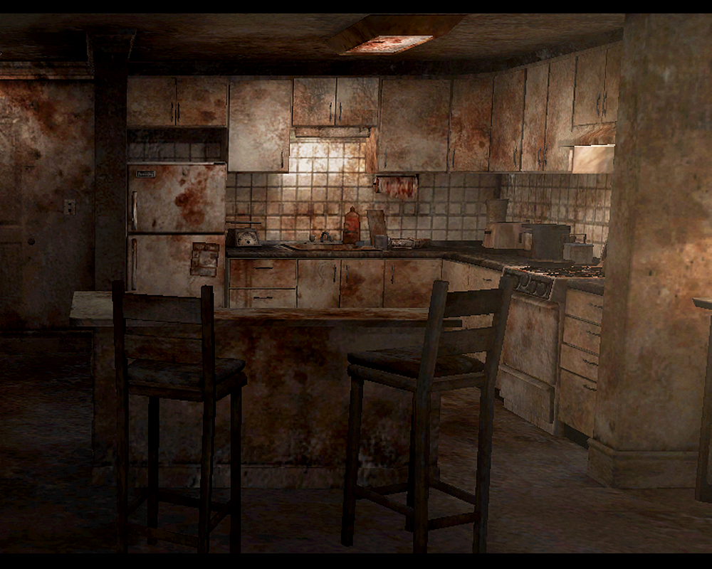
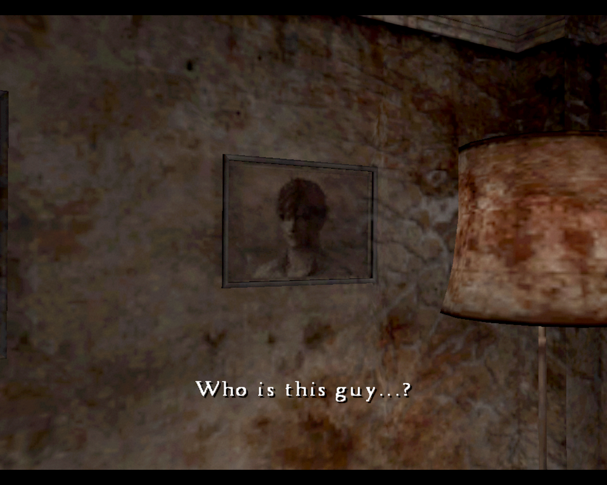

[SH4] Countless Faces on the Wall

How Many Faces Did You Find? Faces, Faces Everywhere
This is a mirror of the DeviantArt version linked above, provided as a backup and for easier access.

It's subtle and often overlooked, but the wall of Room 302 that appears in the opening has many patterns that look like human faces.
I heard they intentionally make things look like eyes and a mouth to take advantage of the pareidolia effect, but once I noticed it, I couldn't help counting how many there were.



In the "21 Sacraments" and "Mother" endings, you end up living in this room together with the faces… whoa.